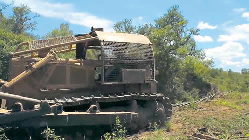

Real Chubut - Agencia de Noticias


Poner el cuerpo a las topadoras

Un grupo de activistas de Greenpeace lucha por frenar las topadoras en la finca salteña Cuchuy –propiedad de Alejandro Jaime Braun Peña, primo segundo del Jefe de Gabinete, Marcos Peña–, en la que de 8962 hectáreas que había de bosques protegidos sólo quedan 3000. La región está protegida por el Ordenamiento Territorial de Bosques Nativos, pero fue rezonificada por el gobierno provincial de Juan Manuel Urtubey a pedido de los propietarios de la finca para poder plantar soja. Entre diciembre y lo que va de enero las topadoras arrasaron con 400 hectáreas y avanzan hacia un poblado en donde viven 10 familias wichi y 7 familias criollas.
“Estamos en momentos críticos porque es uno de los pocos bosques que quedan en pie en la zona. Si siguen desmontando nosotros vamos a seguir protestando hasta que se detengan, pero sabemos que la solución, más allá de nuestra lucha, es política: el empresario que está haciendo esto participa en empresas de la familia Macri; el gobierno nacional puede frenarlo con sólo levantar un teléfono”, dijo en diálogo con PáginaI12 el coordinador de la campaña de Bosques de Greenpeace, Hernán Giardini. “El primer día que llegamos a la finca íbamos caminando y a lo lejos veíamos caer los árboles. Las máquinas avanzan a un ritmo tremendo. Pudimos filmarlas y ponernos adelante para que se detuvieran; ese día no pudieron seguir. Pero la zona tiene la superficie de la mitad la Ciudad de Buenos Aires, por lo cual nos resulta muy difícil frenar todas las máquinas”, relató el activista.
La finca Cuchuy está ubicada en el departamento salteño de San Martín, a 70 kilómetros de la ciudad de Tartagal, y contiene bosque nativo de la ecorregión del Chaco Seco. El Ordenamiento Territorial de Bosques Nativos clasificó esa zona en la Categoría I–Rojo y II–Amarillo, lo que implica que no se permiten desmontes. Sin embargo, Urtubey autorizó la deforestación en esa región a pedido de los propietarios de la finca, entre los que se encuentran Alejandro Jaime Braun Peña y el Secretario de Legal y Técnica de la Nación, Pablo Clusellas, que forma parte del directorio de la firma (ver aparte). La organización ecologista ya había denunciado el caso en el año 2014 y frenado el desmonte hasta que sus activistas fueron detenidos.
Giardini apuntó que en el caso de la finca Cuchuy “se ve muy clara la relación entre los políticos y los empresarios para poder deforestar y plantar soja”. “El gobernador de Salta autorizó el desmonte en 32 fincas que se encontraban en zonas en donde no se podía deforestar por la Ley Nacional de Bosques, un total de 144.984 hectáreas de bosque protegidos. En Cuchuy se rezonificó un total de 8962 hectáreas prohibidas, de las cuales quedan unas 3000”, advirtió. Para los empresarios, el atractivo de estas tierras es la relación entre su fertilidad y su valor: “mientras que en Pergamino, provincia de Buenos Aires, una hectárea cuesta 15 mil dólares, en esa zona se paga 500 dólares. Es más barato comprar un campo allí y desmontarlo, que comprar un campo ‘limpio’ en la pampa húmeda”, detalló el activista. En noviembre, el ministro de Ambiente y Desarrollo Sustentable de la Nación, Sergio Bergman, manifestó que el gobierno consideraba “revisar” la Ley de Bosques (ver aparte), lo cual facilitaría el avance sobre los bosques protegidos por parte de los empresarios sojeros.
Según explicó Giardini, el área de monte que queda en pie es fundamental para la vida de las comunidades indígenas Corralito, Cuchuy, San José, y Chaguaral, al tratarse de su único sustento de alimentos y hierbas medicinales. “Para estas comunidades los bosques son su base de subsistencia: son la casa, el almacén y la farmacia de varias comunidades indígenas. Destruirlos es un crimen”, señaló el ambientalista. El desmonte en fincas linderas de la región y las plantaciones de soja ya destruyeron la laguna de la cual estas comunidades obtenían el agua para vivir. “La laguna quedó totalmente contaminada por los agrotóxicos de los campos de soja de las fincas linderas. Ahora para conseguir agua dependen de que el municipio de General Ballivián les mande camiones cisterna. Estos días hizo más de 40 grados y la situación del agua se agravó todavía más”, afirmó. Ángel Amancio, miembro de la comunidad de Corralito, contó a este diario que, en distintos momentos durante la semana, “cortamos la Ruta Nacional 34 porque el intendente, Samuel Córdoba, se había comprometido con mandarnos agua y no lo cumplió”.
Al igual que con lo que ya ocurre con el agua, Giardini apuntó que “si desmontan las hectáreas que quedan de monte, las comunidades tampoco van a tener comida o medicina, y van a tener que acudir al gobierno municipal también para este tipo de provisiones. El Estado no sólo los tiene abandonados, sino que destruye sus medios naturales de subsistencia”. Más allá de la vida material de las comunidades, el activista describió que el bosque “es un lugar espiritual para estas familias”. “Había un cementerio wichi que quedó tapado por el desmonte. Donde nosotros vemos árboles ellos ven sus lugares espirituales. Ahora no saben en dónde está su cementerio; no saben en dónde están enterrados sus ancestros porque barrieron con todo el bosque”, denunció.
Si bien la zonificación establecida por la Ley 26.331 de Bosques fue modificada por el gobierno salteño, hay otros artículos de esa norma, y de la Ley de Emergencia Territorial Indígena (ley 26.160), que prohíben el desmonte en la zona. El artículo 19 de la ley 26.331 establece que “todo proyecto de desmonte o manejo sostenible de bosques nativos deberá reconocer y respetar los derechos de las comunidades indígenas originarias del país que tradicionalmente ocupen esas tierras”. En el caso de Cuchuy, el avance de las topadoras no cumple con este punto. En cuanto a la Ley 26.160, Giardini explicó que “mientras el Instituto Nacional de Asuntos Indígenas (INAI) está haciendo el relevamiento para evaluar si se trata de territorio indígena que debe ser protegido —es decir, que no puede ser desalojado— las topadoras avanzan, lo que es un desalojo de facto”.
Fuente: Pagina 12